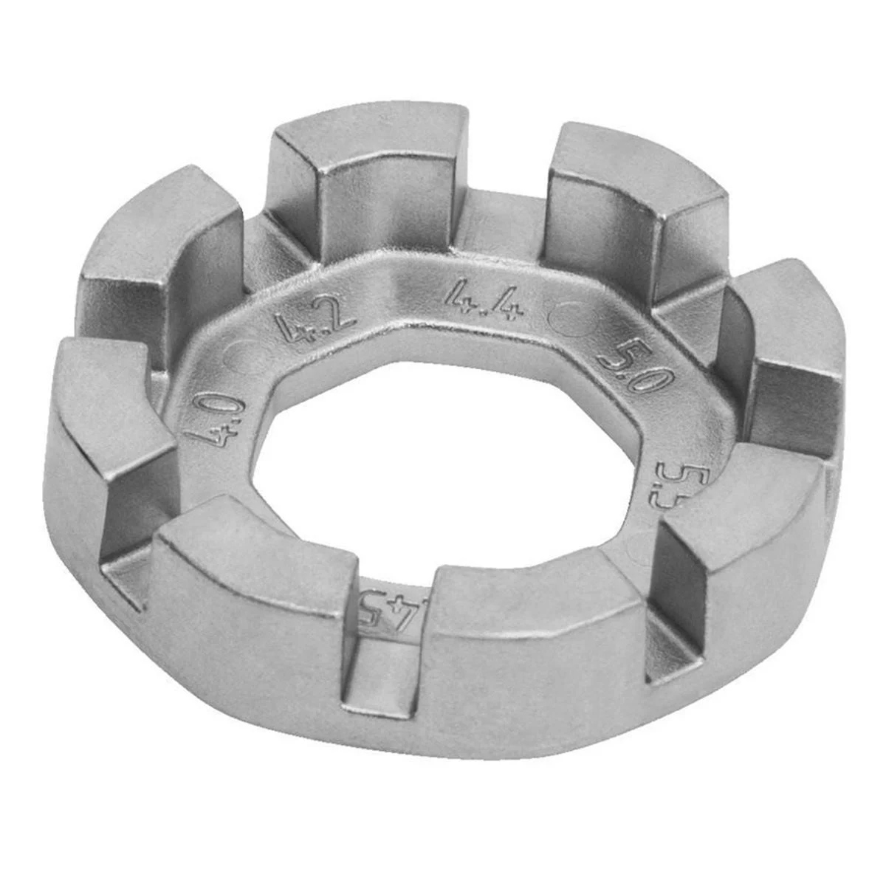
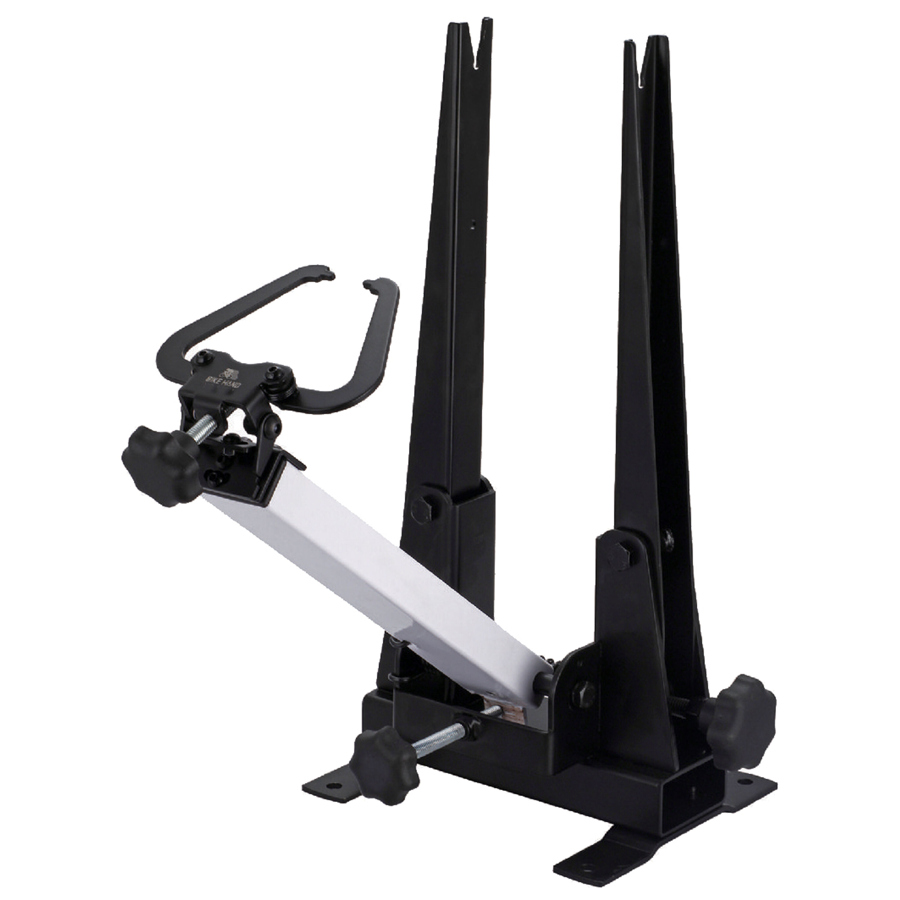
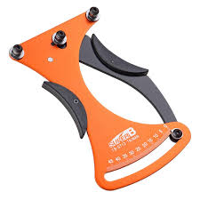

Manutenzione delle Ruote
🔧 Tiraraggi: centratura e tensione
La ruota regge il peso, assorbe urti e trasmette potenza. Se i raggi non sono equilibrati, la ruota si deforma, vibra o perde efficienza. Il tiraraggi serve proprio a mantenere la ruota dritta e stabile.
Come si fa:
- Monta la ruota su un supporto (o sulla bici capovolta) e fai girare lentamente.
- Controlla visivamente (o con una museruola) se il cerchio si muove lateralmente o verticalmente.
- Usa una chiave tiraraggi per stringere leggermente i raggi opposti al punto in cui il cerchio devia.
- Procedi a piccoli gradi (¼ giro per volta), alternando i lati.
- Verifica spesso la tensione toccando i raggi: devono suonare simili al tatto.
Per controlli più precisi si usa la museruola (detta anche mouse), uno strumento che evidenzia ogni minimo scostamento. Approfondiremo il suo utilizzo e la corretta pressione dei raggi nella sezione Consigli (te lo ricorderò quando la scriveremo).
🔩 Problemi ai mozzi: sintomi e soluzioni
Il mozzo è il cuore della ruota: contiene i cuscinetti che permettono la rotazione. Se il mozzo fa rumore, ha gioco o ruota male, è ora di intervenire.
- Rumori: scricchiolii o sfregamenti indicano sporco o mancanza di grasso nei cuscinetti.
- Gioco laterale: se la ruota si muove sull’asse, il mozzo va regolato o revisionato.
- Rotazione dura: segno di cuscinetti danneggiati o ossidati.
Manutenzione base del mozzo:
- Smonta la ruota e apri il mozzo (dipende dal modello: coniche o cuscinetti sigillati).
- Pulisci tutto con uno sgrassatore delicato.
- Controlla i cuscinetti: se rovinati, vanno sostituiti.
- Applica grasso nuovo e rimonta con il giusto serraggio, senza esagerare.
🧰 Attrezzi utili
Ecco alcuni strumenti consigliati per lavorare sulle ruote:
- Chiave per raggi
- Museruola (dima centratura)
- Misuratore di tensione raggi
- Grasso specifico per cuscinetti



⚠️ Attenzione
Tirare i raggi non è un’operazione facile. Richiede precisione, pazienza e strumenti adatti. Se non ti senti sicuro, è sempre meglio portare la ruota da un meccanico esperto: un errore può peggiorare la centratura o danneggiare i componenti.
← Torna indietro